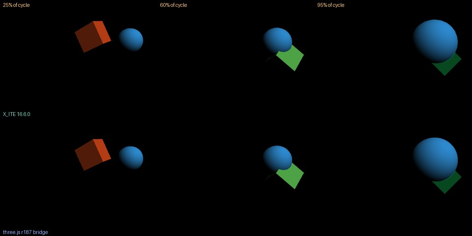
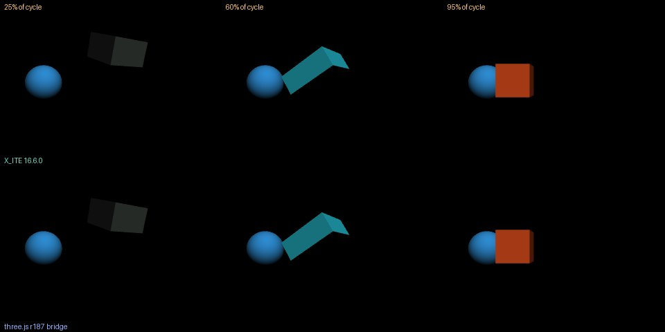

Author the timeline in a tool. Ship it as X3D.
A Theatre.js sequence or a GSAP timeline is turned into one TimeSensor, one interpolator per animated field and two ROUTEs per field. The result plays in any X3D browser with no JavaScript, or the tool keeps the clock and writes plain SAI field values into a running scene. This page loads X_ITE 16.6.0 and plays both.
Live: the same scene, two ways to move it
X_ITE 16.6.0 in your browser. Left button group: which file. Right: who owns the clock.
loading
embed() in x3d.loom/x3d.anim; Theatre state it came from: data/theatre-box.state.jsonEases become keys
X3D interpolators are piecewise linear. Pick a GSAP ease and a tolerance; the baker samples at 60 fps and drops every sample the interpolator reproduces within the tolerance.
bake() from src/bake.js reduces it; the reported error is measured at 4x the sample rate, offset a third of a step, against GSAP itself. Tolerance 1.0 = 0.2% of the value range.The numbers, each with its rig
Receipts written by tools/verify.js; the tables below are read from data/receipt-*.json, not typed.
Pictures: X_ITE above, the three.js bridge below


Found while measuring: ColorInterpolator blends in HSV
It is in the spec (19775-1, interpolation), and X_ITE 16.6.0 does it. GSAP and Theatre blend in RGB.
Same two keys, red to blue, three ways. A baker that ignored this was 0.059 away from X_ITE on the first run; modelling HSV took the gap to 7.6e-8.
lerpHsv); bottom: absolute difference, scaled x4. Rig: computed in this page.Licences, plainly
@theatre/core 0.7.2: Apache-2.0@theatre/studio 0.7.2: AGPL-3.0-onlyGSAP 3.15.1: standard no-charge licence
The exporter imports @theatre/core only, to evaluate an author's saved state with Theatre's own curve maths. @theatre/studio (the editor) is never imported, bundled or served here: the author runs it on their own machine and saves a JSON state, which is data. An X3D file made from that state contains no Theatre code. If you embed the studio in a page you ship to users, its AGPL terms apply to that page; this package does not.
GSAP is loaded from jsDelivr in this page. Its licence is free for most uses but not for every one (for example, a tool that lets people build visual animation tools without GSAP's own Business licence); read gsap.com/standard-license before putting it in a product. The exporter uses GSAP only at build time and the X3D it writes does not contain GSAP.
This is engineering notes, not legal advice.